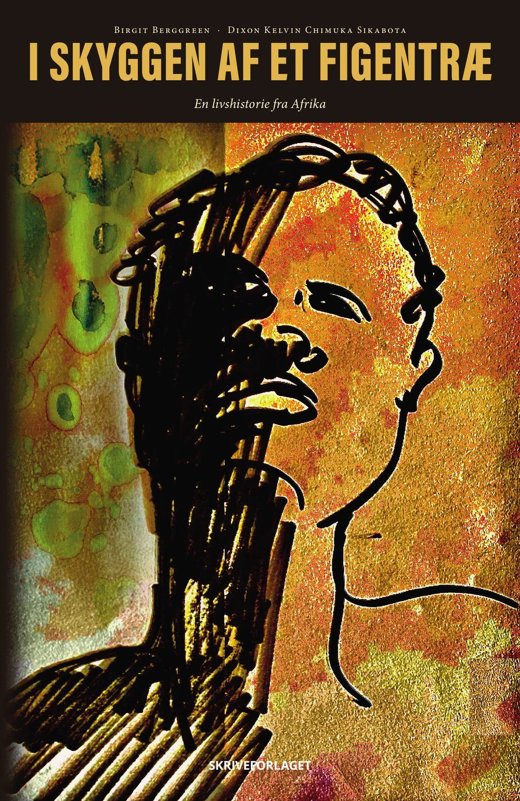
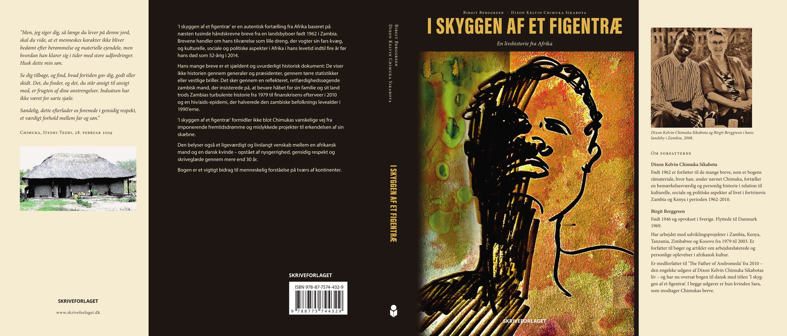

Aktuel udgivelse
I skyggen af et figentræ
En livshistorie fra Afrika
Udkommer i midten af januar 2027 på skriveforlaget.dk

Aktuel udgivelse
I skyggen af et figentræ, en livshistorie fra Afrika

’I skyggen af et figentræ’ er en autentisk fortælling fra Afrika, baseret på tusind håndskrevne brevsider fra en mand født 1962 i en afsides beliggende landsby i Zambia. Brevene handler om ansvar for sin fars kvæg allerede før han skal i skole; om at navigere indenfor Afrikas kulturelle rammer og samtidig drømme om en videregående uddannelse langt fra familiens jord. De handler også om politiske overvejelser; om at overvinde store kriser og finde sit ståsted kort før sin død som 52-årig i 2014.
De mange breve er et sjældent og uvurderligt historisk dokument: De fortæller ikke historien gennem generaler og præsidenter; gennem tørre statistikker eller vestlige briller. Det sker gennem en reflekteret og retfærdighedssøgende zambisk mand, som insisterede på at bevare et håb for sin familie og sit land, trods Zambias turbulente historie fra 1979 til finanskrisens efterveer 2010, samt en hiv/aids epidemi, der halverede den zambiske befolknings levealder i 1990’erne.
”I skyggen af et figentræ” formidler ikke blot Chimukas vanskelige vej fra højtflyvende fremtidsdrømme, mislykkede projekter og erkendelsen af sin skæbne.
Den belyser også et ligeværdigt og livslangt venskab mellem en afrikansk mand og en dansk kvinde – opstået af nysgerrighed, gensidig respekt og skriveglæde gennem mere end 30 år.
Bogen er et vigtigt bidrag til menneskelig forståelse på tværs af kontinenter.
Chimuka, Itezhi-Tezhi, 28. februar 2009Men, jeg siger dig, så længe du lever på denne jord, skal du vide, at et menneskes karakter ikke bliver bedømt efter berømmelse og materielle ejendele, men hvordan han klarer sig i tider med store udfordringer. Husk dette min søn.
Se dig tilbage, og find, hvad fortiden gav dig, godt eller skidt. Det, du finder, og det, du står ansigt til ansigt med, er frugten af dine anstrengelser. Indsatsen har ikke været for sarte sjæle.
Sandelig, dette efterlader os forenede i gensidig respekt, et værdigt forhold mellem far og søn.